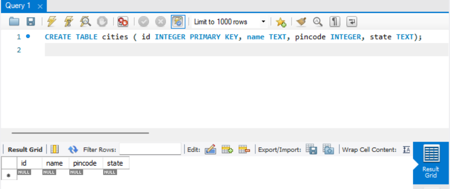
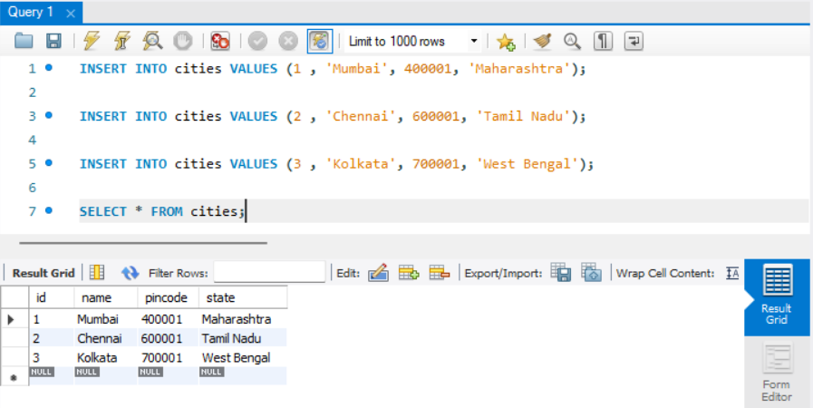

CREATE and INSERT
Contents
CREATE and INSERT¶
CREATE TABLE¶
To create a table in SQL, you can use the CREATE TABLE statement followed by the table name and the list of columns and their data types. Here’s a general syntax for creating a table:
CREATE TABLE table_name (
column1 datatype,
column2 datatype,
column3 datatype,
...
);
You can replace table_name with the desired name for your table. Inside the parentheses, you specify the columns of the table along with their respective data types. Each column is defined with a name and its data type, separated by a comma.
For example, let’s create a simple table named “employees” with columns for employee ID, name, and salary:
CREATE TABLE employees (
employee_id INT,
name VARCHAR(50),
salary DECIMAL(10, 2)
);
In this example, the “employees” table has three columns: “employee_id” of integer data type, “name” of variable character data type with a maximum length of 50 characters, and “salary” of decimal data type with a precision of 10 digits and a scale of 2.
Note
The specific syntax and available data types may vary depending on the SQL database management system you are using.
DATA TYPES¶
In SQL, data types define the type of data that can be stored in a column of a table. Each column in a table is assigned a specific data type, which determines the kind of values that can be stored in that column. Here are some commonly used data types in SQL:
1. Integer (INT):¶
Used to store whole numbers without decimal places.
Example: 42, -10, 0.
2. Decimal/numeric (DECIMAL/NUMERIC):¶
Used to store decimal numbers with a specified precision and scale.
Example: 3.14, -0.5, 123.456.
3. Varchar/char/nvarchar (VARCHAR/CHAR/NVARCHAR):¶
Used to store character strings of variable or fixed lengths.
Example: ‘Hello’, ‘OpenAI’, ‘12345’.
4. Date (DATE):¶
Used to store dates without time information.
Example: ‘2023-05-21’.
5. Time (TIME):¶
Used to store time values without date information.
Example: ‘13:45:00’.
6. DateTime/TimeStamp (DATETIME/TIMESTAMP):¶
Used to store date and time values.
Example: ‘2023-05-21 13:45:00’.
7. Boolean (BOOL):¶
Used to store true or false values.
Example: true, false.
You can dive deeper into SQL DATA TYPES by using this link.
These are just a few examples of commonly used data types in SQL. Different database management systems (DBMS) may support additional data types specific to their implementation. It’s important to choose the appropriate data type for each column to ensure accurate storage and retrieval of data in the database.

What to do after table creation?¶
After creating a table in SQL, there are several actions you can take depending on your specific requirements:
Insert Data: Use the INSERT statement to add rows of data into the table. You specify the column names and provide the corresponding values for each row.
Retrieve Data: Use the SELECT statement to query and retrieve data from the table. You can specify the columns you want to retrieve and apply conditions using the WHERE clause for filtering.
Update Data: Use the UPDATE statement to modify existing data in the table. You can specify the column(s) to be updated and provide new values. Conditions can be applied using the WHERE clause to update specific rows.
Delete Data: Use the DELETE statement to remove rows from the table. You can specify conditions using the WHERE clause to delete specific rows or delete all rows without conditions.
Modify Table Structure: If needed, you can alter the table structure using the ALTER TABLE statement. This allows you to add, modify, or delete columns, change data types, and perform other modifications.
Create Indexes: Indexes can be created on specific columns to improve query performance. Indexes help in faster data retrieval by creating a sorted structure of the indexed column(s).
These are some common actions you can perform after creating a table in SQL. The specific operations you choose will depend on your data management and analysis requirements.
Insert Data into the Table¶
Inserting data into a table is a fundamental operation in SQL that allows you to populate a table with new rows of data. This process is crucial for building a database’s content and making it useful for applications. The INSERT INTO statement is used for this purpose, and it enables you to add data to specific columns of a table. Let’s delve into the process of inserting data into a table in SQL.
To insert data into a table, you need to specify the table name and the values you want to insert. The basic syntax of the INSERT INTO statement is as follows:
INSERT INTO table_name (column1, column2, column3, ...)
VALUES (value1, value2, value3, ...);
Here’s a breakdown of the components:
INSERT INTO: The command used to indicate that you want to insert data into a table.table_name: The name of the table where you want to insert data.(column1, column2, column3, ...): A comma-separated list of column names indicating which columns you want to insert data into.VALUES: The keyword used to indicate that you are providing values for the specified columns.(value1, value2, value3, ...): A comma-separated list of values that correspond to the columns you specified.
For instance, consider a table named “cities” with columns: city_id, name, pincode, state. You can insert a new city record like this:
INSERT INTO cities (city_id, name, pincode, state)
VALUES (1, 'Mumbai', 400001, 'Maharashtra'),
In this example, the data for the “employee_id,” “first_name,” “last_name,” and “salary” columns is provided in the VALUES clause. The specified values correspond to the specified columns in the same order.
You can also insert multiple rows of data in a single INSERT INTO statement by separating the sets of values with commas. Here’s an example inserting two cities records:
INSERT INTO cities (city_id, name, pincode, state)
VALUES (1, 'Mumbai', 400001, 'Maharashtra'),
(2, 'Chennai', 400002, 'Tamilnadu');
It’s important to ensure that the data you insert adheres to the data types and constraints defined for the table columns. For example, if a column has a numeric data type, you should provide numeric values; if a column is defined as a date, use a valid date format.
In some cases, you may want to insert data into only specific columns while leaving others empty. To achieve this, you can omit the column names for which you’re not providing data. For example:
INSERT INTO cities (city_id, name, pincode)
VALUES (3, 'Pune', 411006);
Remember that inserting data into a table impacts the database’s integrity and structure, so it’s essential to double-check the data you’re inserting to ensure accuracy and consistency. Additionally, you can combine the INSERT INTO statement with other SQL statements to perform more complex operations, such as inserting data based on the result of a subquery or combining data from multiple tables before insertion.
In conclusion, inserting data into a table in SQL using the INSERT INTO statement is a fundamental database operation. It allows you to populate tables with relevant data and is a critical step in building functional and meaningful databases for various applications.

Exercise¶
Theory Questions :¶
What is the purpose of the SQL statement used to create a new table? Describe the components involved in creating a table.
How do the SELECT and FROM clauses contribute to an SQL query? Explain their roles in retrieving data from a database.
Define the term “data type” in SQL. Why is it crucial to choose appropriate data types when defining columns in a table?
What is the significance of the INSERT INTO statement in SQL? Provide an overview of its structure and how it’s used to add new records.
Elaborate on the concept of aliases in SQL. Give an example situation where employing aliases can enhance query readability.
Coding Questions:¶
Create Table: Create a table named “students” with columns for student_id (integer), first_name (varchar), last_name (varchar), and age (integer).
Insert Data: Insert two new records into the “students” table with the following details:
• student_id = 1, first_name = ‘John’, last_name = ‘Doe’, age = 20
• student_id = 2, first_name = ‘Jane’, last_name = ‘Smith’, age = 22
Insert Data with Multiple Rows: Insert three new records into the “students” table with the following details:
• student_id = 3, first_name = ‘Michael’, last_name = ‘Johnson’, age = 21
• student_id = 4, first_name = ‘Emily’, last_name = ‘Williams’, age = 19
• student_id = 5, first_name = ‘Daniel’, last_name = ‘Brown’, age = 23
Create Table with Constraints: Create a new table named “employees” with columns for employee_id (integer), first_name (varchar), last_name (varchar), salary (decimal), and department (varchar). Multiple Inserts and Transaction: Insert five new records into the “employees” table with the following details:
• employee_id = 101, first_name = ‘Alice’, last_name = ‘Johnson’, salary = 60000.00, department = ‘HR’
• employee_id = 102, first_name = ‘Bob’, last_name = ‘Smith’, salary = 65000.00, department = ‘Finance’
• employee_id = 103, first_name = ‘Carol’, last_name = ‘Williams’, salary = 70000.00, department = ‘IT’
• employee_id = 104, first_name = ‘David’, last_name = ‘Brown’, salary = 75000.00, department = ‘Marketing’
• employee_id = 105, first_name = ‘Eva’, last_name = ‘Miller’, salary = 80000.00, department = ‘Finance’
Perform all insertions within a transaction to ensure that all or none of the records are inserted.
Create an SQL command to make a Products table with the following specifications:
ProductID as an integer,
ProductName as a string (varchar) of 255 characters maximum,
Price as a decimal,
QuantityInStock as an integer
Insert values in it :
(1, ‘Laptop’, 1200.00, 10),
(2, ‘Smartphone’, 800.00, 20),
(3, ‘Keyboard’, 100.00, 50).
Create a table named Orders with the following columns:
OrderID as an integer,
OrderDate as a date,
CustomerID as an integer,
Insert values in it:
(101, ‘2024-01-03’, 2001),
(102, ‘2024-02-05’, 2002),
(103, ‘2024-12-04’, 2003).